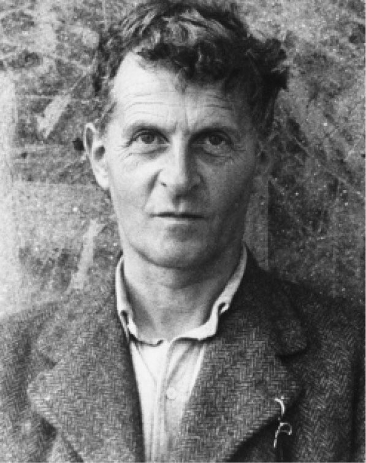
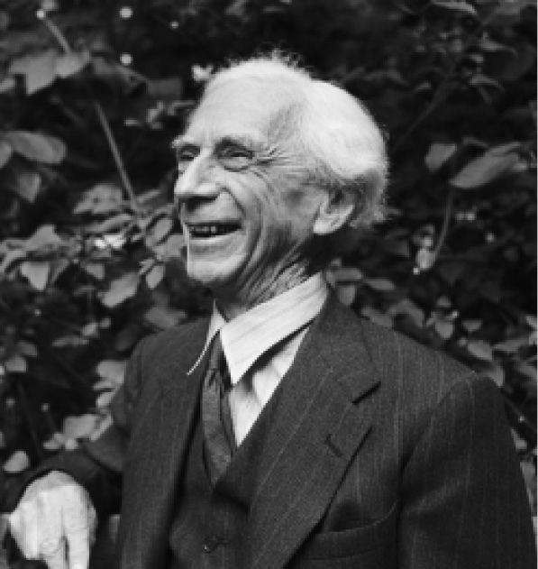

如果你想看清罗素的重大贡献，那就要观察一下，从两次世界大战之间的年代起在英语世界中发展的主流哲学。另外还要看一看逻辑和数理哲学的发展、20世纪西方世界中道德风气的改变，以及为了防止核武器扩散而进行的种种努力。全面讲述其中任何一个问题都要提到罗素。
在上面说的某些方面他只是众多角色中的一个；比如说促成本世纪的道德革命就绝非他一人之力。他在核裁军运动中站在更靠近中心的位置，正如第一次世界大战时期他在和平运动中的地位一样。
但是在哲学领域，正如第一章所说，他的地位却重要到无所不在的程度。他的哲学继承者是按照他的风格进行哲学工作的，所讨论的是由他认定或由他赋予当代说法的问题，使用的是由他发展起来的工具和技术，他们大体上也都认同他所抱有的目标和假定。正是由于这种影响无所不在，20世纪比他年轻几代的哲学家中许多人几乎意识不到这一切都是由他开创的，这就足以衡量他的影响的深远程度了。
儒勒·威勒曼说，当代哲学是从罗素《数学的原理》一书开始的。著名美国哲学家奎因在引用这句话时换了个比喻：在他看来这部著作是“20世纪哲学的胚胎”（W.V.奎因，《为纪念文集所写的评论》，载皮尔斯，《伯特兰·罗素》，第5页）。奎因本人就是读了罗素才被吸引到哲学上来的。他年轻时在逻辑、科学、哲学各方面最初所受的教育就是靠读罗素的书得到的；同许多人一样，他感受到这些书的“吸引力”，先是投入逻辑和数理哲学的研究，后来又钻研认识论和科学哲学。奎因写道：“罗素在逻辑上的真正科学精神在他关于自然知识的认识论上得到了反映。这种反映在1914年出版的《我们关于外部世界的知识》一书中尤为明显。这本书使我们当中一些人很受鼓舞，卡纳普无疑是其中之一，使我们充满了建立现象论的新希望。”（同上书，第2—3页）奎因把该书同罗素关于逻辑原子主义的讲演以及《心的分析》和《物的分析》一起当作富有开创性的著作：“它们对于本世纪的西方科学哲学永远不会失去其重要性。”（出处同上）而罗素的逻辑对于他的哲学也永远不会失去其重要性。“罗素的名字同数理逻辑是分不开的，对此他做出了很大贡献”——特别是摹状语 [10] 理论和类型论。
罗素首创了类型论，目的在于克服正当他努力把数学建立在逻辑基础之上时所发现的一些悖论。在为解决这个问题而做出努力时，他全面考察了一些可供选择的方案，包括一个后来在集合论中占了上风的设想，以致不无讽刺意味地取代了罗素最后构想的那个方案，这就是恩斯特·策梅罗所发展的理论。然而罗素的类型论在哲学上却发挥了重大影响。这个理论的主导思想在1920年代和1930年代曾被逻辑实证主义者采纳，用来攻击形而上学；吉尔伯特·赖尔曾用这个理论的不同说法来消除“范畴错误”，这种错误具体表现为某人认为牛津大学是一个存在于其所有学院和机构之外的实体。按照奎因的看法，类型论还对胡塞尔产生过影响，此外类型论连同罗素的逻辑的其他方面也影响了伟大的波兰逻辑学家斯坦尼斯拉夫·列斯涅夫斯基和卡济米尔兹·艾杜凯维奇（皮尔斯，《罗素》，第4页）。
此外还必须提到摹状语理论的重要性。奎因说：
（皮尔斯，《罗素》，第4—5页）
罗素逝世后，吉尔伯特·赖尔对亚里士多德学会宣读了一篇悼词。该学会是英国主要的哲学俱乐部，罗素从1896年起就经常去那里宣读论文。赖尔在这篇悼词中讲明他认为在哪些方面罗素给20世纪哲学划出了全部轨道（《罗素：1872—1970》，后收进罗伯茨编《罗素纪念文集》）。一个方面是“罗素给哲学思想方法带来了新的哲学工作风格，我认为这实际上是靠他独自完成的”（同上书，第16页）。这就是使用困难的实例来检验哲学论点，是一种旨在仔细考查哲学主张和哲学概念的概念性实验。例如，在《以类型论为基础的数理逻辑》这篇论文中，罗素列举了七种需要由一个有效力的理论来解决的矛盾，并把能够处理所有这些矛盾作为检验他的类型论是否可以成立的标准。这种技术现在已经成为哲学方法中习以为常的东西。设计“思想实验”就是用来检验一种观点的有效性。例如在伦理学中把一个原则应用到许多各自不同的越来越困难的个例上，看其能否适用；或者例如在法庭上或形而上学上关于人的身份概念的重要讨论中，人们设计出想象的“存在测验”来确定人在经过这些测验之后是否还是“同一个人”。
但是在赖尔看来，更为重要的是罗素把形式逻辑这一学科引进哲学中来的方式。“接受后亚里士多德形式逻辑的一些训练相当快地被认为是未来哲学家的一个不可缺少的条件，这要归功于罗素，并在较低程度上归功于弗雷格和怀特海。”（同上书，第19页）赖尔的职位使他对此深有了解；在保证牛津大学课程表的变化上，他是起过作用的。而接受逻辑训练的理由就在于逻辑引进严格性并且可以给人带来那种体现为罗素关于摹状语和类型论的洞见。同奎因一样，赖尔认为这些理论在具体说明怎样可以区分意义与无意义上特别重要，因而照他看来它们分别影响了早期维特根斯坦和逻辑实证主义者。
威勒曼把罗素的第一次重大努力，即赋予数学以逻辑基础称为分析哲学的熔炉。这无疑是正确的，也就是说罗素在这里通过最初阶段的和有时还是不完整的形式初步指明了分析哲学的主要方法和问题。但是奎因的话也是对的，他说罗素自1903年到大约1930年整个这段时期的著作（包括书和论文）是分析哲学的基础。然而其中某些篇章却更直接显示出后来哲学发展的萌芽。例如《我们关于外部世界的知识》的第二章，该章标题为“逻辑是哲学的本质”。这一章从两个方面讲都是一篇示范性文献。首先，它最清楚地讲明罗素分析风格的目标、动力和方法。其次，它包含了维特根斯坦在《逻辑哲学论》中所采用的哲学规划的蓝图，显示出这些思想的萌芽和发展。

图12 路德维希·维特根斯坦（1889—1951），罗素战前在剑桥大学的学生
罗素在《我们关于外部世界的知识》第二章的开头就说：哲学问题，“只要是真正的哲学问题，全都可以还原为逻辑问题”（《我们关于外部世界的知识》，第42页）。他的意思是说，哲学问题可以通过使用初等数理逻辑的技术得到澄清或者消除。这些技术“让我们能够容易处理比文字推理所能列举的更加抽象的概念；它们向我们提示用其他方法无法想到的富有成效的假说；它们还使我们能够很快看清什么是可以用来构建某一特定的逻辑或科学大厦所需的最少量材料”（同上书，第51页）。他在《我们关于外部世界的知识》后面几章所提出的关于知觉和知识的理论尤其明显是在数理逻辑的启发下产生的，“没有数理逻辑这些理论是绝对不能想象的”（出处同上）。起主要作用的是这种思想，即认为逻辑确定事实的形式并确定表达事实形式的命题。摹状语理论一直就是通过显示命题的形式来解决重要问题的分析典范。罗素甚至早先就已经用形式分析表明所有命题并非都是主谓形式，而是表示关系；照他看来这本身就反驳了观念论并为多元论的假定提供了正当理由。
罗素在《我们关于外部世界的知识》第二章中讨论关系时讲到只有在掌握事实的逻辑形式的分类之后才能正确理解关系。这里已经预示出维特根斯坦的《逻辑哲学论》的蓝图。这种提法并不意味着罗素的观点是从维特根斯坦那里学来的，因为在罗素写出这一章之前两年中维特根斯坦是他在剑桥的学生；情况正好相反：维特根斯坦倒是向罗素学到这些思想的。这种主张的理由根据可以简述如下。首先，有必要重温维特根斯坦在《逻辑哲学论》中的论证。用维特根斯坦自己的话并且重新安排其编号系统（目的在于显示论证的结构），《逻辑哲学论》的基本论点是：
1.世界就是全部的实际情况。
1.1 世界是事实而不是事物的全体。
2.实际情况——事实——就是事态的存在。
2.01 事态（事物的状态）是客体（事物）的组合。
2.02 客体是简单的。
与这种关于世界结构的简朴描述相平行的是关于命题中所表现的思想的相应结构的描述，这种关系维特根斯坦称为“图映”关系。
4.事实的逻辑图像就是思想。
3.1 思想在命题中得到可以由感官感受的表达方式。
3.201 思想能够在命题中得到表达，其方式是命题符号的组成元素与思想中的客体相对应。
5.命题是基本命题的真值函项。
4.21 最简单的命题即基本命题断言事态的存在。
还有其他等等关于细节的论述。不用说，支持这些论点的逻辑思想当然是读罗素早期著作的人所熟知的；但是这些论点主要涉及的却是结构概念和以摹状语理论为典型的逻辑分析手段。更引人注目的是维特根斯坦在《逻辑哲学论》中和罗素在《我们关于外部世界的知识》第二章中所分别表达的实际内容。罗素在这一章中写道：
（《我们关于外部世界的知识》，第60—61页、第62页）
还有其他等等类似的话。
罗素在这里提出的只是一个轮廓，并不是正式的说法。维特根斯坦在《逻辑哲学论》中把他的论点表述得更为详细，而且附有系统的编号，外观上显得很严格，尽管事实上这只是个部分的论证。维特根斯坦小心翼翼地把他的语言——世界的平行结构与认识论的考虑分离开来，而罗素则给出了事实、性质和关系的实例：“这是红的”是原子事实的一个实例，而“今天是星期一，天在下雨”则是分子事实的一个实例。
维特根斯坦的《逻辑哲学论》的基本思想来自罗素的这些思想，这一点可以从以下事实得到证实：罗素在他的《我们关于外部世界的知识》第二章中所写的提纲概括了他想在一部现今取名为《认识论》的稿子中详细叙述的内容。（这一书名是在他身后整理出版这部稿子时所取的。）当罗素于1913年写作本书时，维特根斯坦还是他的学生。他把稿子交给维特根斯坦看，后者批评了其中关于亲知和判断的讨论。正如前面所说，“亲知”是罗素给主体与各种不同种类客体之间的基本认知关系所起的名称；“判断”则是一种复合关系，大体上可以描述为：只要对命题的组成部分有亲知的关系，就承认该命题为真。我们不知道维特根斯坦的批评意见的细节；罗素在一封信中曾复述这些批评，他说：“我们两人都因情绪激动而有些急躁。我让他看的是我刚刚写出的中心部分。他说这些全是错的，未能理解到那些困难（他说已经试用过我的观点，知道它行不通。我不理解他的反对意见），实际上他讲得很不清楚，但是我却确信他是对的。”主要由于这个原因，罗素只发表了这份稿子的一部分，并且在若干年后放弃了亲知这个在其中占有中心地位的概念。但是这个基本构想（即认为分子命题可以分解为原子命题，而这些命题则表达在结构上与之类似的事实，并以事实与命题之间的关系来保证我们对于命题的理解）却仍然在《我们关于外部世界的知识》第二章中保留下来。维特根斯坦在《逻辑哲学论》中正是依附这个骨架而赋予它多少有些不同的血肉的。
维特根斯坦的观点就是这样来自罗素的思想，这一点并不令人惊奇。实际上罗素是维特根斯坦唯一的哲学老师；除了少数可举出的著作外，罗素的著作是他主要的哲学读物。他的朋友戴维·品森特在其日记中写道：“很明显，维特根斯坦是罗素的一个弟子，得益于他甚多。”由此可以清楚看出，从罗素著作中最早生长出来的哲学支脉就是维特根斯坦的《逻辑哲学论》。可以这样说，通过某些复杂的和这一次甚至是反面的方式，罗素也是维特根斯坦后期哲学的主要影响人之一。
如果受罗素影响的人包括我们已经提到过的那些名字（奎因、卡纳普、逻辑实证主义者、维特根斯坦和赖尔；对于这个名单，还应当加上艾耶尔的名字，因为他同奎因一样是自己承认这种影响的），那么威勒曼认为罗素是20世纪分析哲学的奠基人和主导精神的说法就无疑是正确的。但是关于这一点还有很多话可说；事实上也真有人把这份荣誉奖给别人。
不幸的是R.C.马尔什所编的名为《逻辑与知识》的罗素论文集没有索引。这本论文集把罗素某些最重要和最有影响的文章收集起来，所以其中大多数文章是分析哲学家所必读的。这些文章包括《关系的逻辑》《论指示》《建立在类型论基础上的数理逻辑》《论亲知的性质》《逻辑原子主义的哲学》《论命题的性质和表示意义的方式》等等。由于不附索引，仔细阅读这些文章的学者往往在书后面空白页上做出自己的索引。看一看我自己的索引就发现不仅有在罗素著作选集中预料会有的题目，如摹状语、指示、类型、逻辑虚构、分析、亲知、感觉材料、关系、共相、特体、事实、命题等等的出处；而且还有一个看来像是分析哲学中常常遇见的概念表，如命题态度、模态与可能世界、含糊性、自然主义、真理函项性、心的本性、证实、真理、存在、意义等等。这其中很大部分来自罗素本人，所以罗素的著作在兴趣焦点和探讨范围上都促成了哲学史上一个明显的方向性变化。甚至罗素在书中表示感谢时（他在讲到自己受到别人启发而表示感谢时总是非常慷慨大度，实际上是过了分）最常提到的五个同时代人（即皮亚诺、弗雷格、怀特海、摩尔、威廉·詹姆斯）当中，只有一个人在讨论这一类题目上并在较小范围内可以与他相比，这个人就是弗雷格。
但是尽管弗雷格影响了罗素，并且在数理哲学和语言哲学中做了卓越的工作，他对罗素所起的影响却比人们所认为的要小：罗素最初读弗雷格的著作时并不理解他，只是等到自己重新发现弗雷格的某些观点时才掌握了它们的意义；甚至这时他在诸如弗雷格关于意义与所指之间的区别等某些重要论点上也并未采用弗雷格的观点，而是自己另外做出一个不同的、不太方便的区别。弗雷格的着眼点尽管比罗素的深刻，却比较狭窄，所以罗素把数理逻辑的新观念应用到较宽阔的哲学问题上是前无古人的。因此他的贡献具有伟大的独创性。
罗素的影响也在其他方面起到作用。他在《我们关于外部世界的知识》一书第三章中处理怎样说明空间知觉这个问题时通过构建一个“模式假说”来提供一种可能的解释，即怎样才可以说明一些个体在视觉和触觉中所经验到的配景相当不同的个人空间与其他个体的个人空间得以在公共空间中协调一致。他的办法是通过建立一个模式，然后“削掉假说中多余的东西，剩下的也就是我们可以看作是对这个问题做出的抽象解答”（《我们关于外部世界的知识》，第94页）。他带领我们通过构造的模式一步一步地展示怎样克服感觉世界与物理世界之间表面存在的一种重要的差异。以后P.F.斯特劳森在其著作《论个体》中就采用类似的技术，构建了一个纯听觉的世界，以便探讨基本特体与再认同等概念。A.J.艾耶尔在《哲学的中心问题》中也用它来确定就知觉能力和概念能力来讲我们在多大程度上承认知觉者是知觉经验的基础。还有一些其他实例。
罗素遗产的一个突出特点就是其影响几乎全在哲学方面而不在数学或逻辑方面。这件事实需要加以说明。G.T.尼伯恩讲过：“尽管《数学原理》给了20世纪逻辑学家和哲学家以很大启发，尽管该书提供的概念和符号设计无比丰富，这部伟大著作在数学基础文献中仍是一部后继无人的经典。”这个评价严格来讲并不正确；《数学原理》所引进的逻辑记号系统现在已成为通用的标准形式的基础，而《数学原理》中的某些技术则有了不同的形式，例如奎因的类型论。但是这个评价从广义上说却是对的；这就是值得评论的理由。简单说，也许可以这样讲：在《数学原理》写作的同时及以后涌现出大量的数学和逻辑研究，平心而论这就使得《数学原理》很快变得陈旧。人们提出了各种不同的逻辑，并发现了不依靠逻辑的对算术的形式化表述，逻辑和集合论后来也被证明都是相对的（这就是说，从各自不同的研究方法取得的进展表明并没有一种独一无二的或者“绝对的”逻辑或集合论）。策梅罗–弗兰克尔的集合论取代了类型论的集合论，而库尔特·哥德尔的不完全性定理（基本上是说数学或逻辑都不能公理化）也挫败了罗素所追求的逻辑主义（即想以逻辑方式来说明数学知识的来源并使之获得合理根据）的希望。
由此可见，《数学原理》的构想以及罗素为了克服实现这种构想的技术困难而做的尝试之所以有价值，主要在于它在哲学中所起的作用而不是在数学史上的地位。弗雷格的著作也是这样，只不过他在逻辑的某些形式上的技术性创新对其后来的发展起过极其重要的作用。
弗雷格是20世纪初另外一位伟大的思想家，被人誉为分析哲学的奠基人。迈克尔·达麦特是把弗雷格置于本世纪哲学舞台中心的一位学者，他争论说分析哲学的本质就是这种主张，即认为要理解我们对于世界的看法，就必须考察语言，因为语言乃是通向思想的唯一渠道。这就使得语言哲学占据了中心地位，取代了至少自笛卡尔以来就占有这一地位的认识论。据达麦特讲，这种由语言哲学取代认识论的变化本身要归功于弗雷格。弗雷格早于罗素二十年就开始进行同样的计划，即把数学建立在逻辑的基础之上。他发现他当时拥有的逻辑工具没有希望完成这项工作。所以他才着手创造新的工具，并取得成功。他的创新既简化了逻辑，又大大扩展了逻辑的能力。但是他也看到，要实现他的计划，就必须考察指称、真理、意义这些概念；而据达麦特说，这正是转向语言哲学的开始。
毫无疑问，弗雷格的工作在哲学上极为重要。弗雷格曾对罗素产生过影响，这也是没有疑问的，尽管照上面几段所述，这种影响并不那么明确。但是达麦特主张把历史的优先地位给予弗雷格，这一点却令人难以同意——这并不仅仅是由于达麦特的分析哲学观因为不现实而带有局限性。事实上弗雷格的著作在他生前（他死于1925年）很少为世人所知，而罗素则几乎是唯一使之广为人知的人。即使如此，直到1950年代（实际上是直到1960年代达麦特第一部关于弗雷格的重要研究发表之后）弗雷格的著作的重要性才充分被人认识。就这个纯属历史的问题来讲，更正确的说法应该是：弗雷格思想的突出价值在于其理论上的而不是历史上的重要性。而就罗素的大部分著作，如他的关于知觉和知识的理论、他的关于精神和科学的哲学来说，比较公平的说法却正好相反：其重要性是历史上的而不是理论上的。但是罗素的某些著作，上面已经讲过，兼有理论和历史两方面的价值，这也就是为什么罗素著作对分析哲学起到开创作用的原因。
有时人们也曾提出G.E.摩尔对分析哲学起着奠基作用的主张，这并非没有道理。罗素为人慷慨大度，把自己从观念论解放出来归功于受到摩尔的影响，而摩尔的哲学气质和方法也无疑对他产生过影响。摩尔说大多数哲学家都是由于惊奇而开始进行哲学思考，而他自己从事哲学工作的理由却是由于发现其他哲学家所说的话令人惊讶。他的方法是：找出某些哲学研究领域中正在讨论的关键性名词或概念的定义。他对定义的要求是：定义的说法与被定义的名词或概念应该是同义的，但却不包含与之相同的名词。这里的困难在于即使这类定义是可能的（其可能性确实令人产生疑问，即使在字典中常见的字词定义也是如此），它们也仅仅构成一种定义，而其他种类的定义，比如说分析性定义（通过描述某种事物的结构或功能来下定义）和使用性定义（让某种事物显示其作用来说明其自身）不仅更为实用，而且具有更大的显示性，因而在哲学上也就更有价值。摩尔当然承认其他种类的定义的存在及其实用价值，但却认为他所喜欢的那一种是合乎理想的定义；他还认为某些具有根本性质的哲学概念，比如说伦理学中的“善”，是不可能下定义的：这类概念是不可界定的最基本的东西，理论必须从它们开始而不是去说明它们。
摩尔的风格和人格在分析哲学的早期岁月中无疑起过重要的作用。罗素在《我们关于外部世界的知识》一书序言中说，分析在哲学中引进了伽利略在物理学中引进的东西：“用逐步取得的、详尽的、可以证实的结果取代未经检验但却迎合想象的广泛的大原则。”这种说法同样可以很好地刻画出摩尔耐心细致的哲学风格。摩尔的哲学风格表现为先提出一种主张或想法，然后锲而不舍地对之做无休止的分析，直到其各个组成部分都清晰地展现出来为止。这种风格显示不出大的气魄，但在一定限度内却卓有成效。摩尔得到不少人的仿效，然而他的目标和方法主要却是批判性的；他并没有做出任何哲学上的发现。他的主要遗产在于他传播了伦理学中“自然主义的谬误”的概念，这个概念是用某种比如说快乐的自然性质来界定善这一道德性质。一位哲学家影响的大小可以从人们应用他所引进的方法和思想看出来，照这个尺度来衡量，摩尔在20世纪初的地位无法与罗素相比。然而他却帮助树立了分析精神，他那有名的习惯（见到他认为奇怪的哲学说法就会由于吃惊而深吸一口气）使得几代学生和同事在说话和写文章之前更加认真思考。
从上面讨论中我们也许可以看出这个推论，即分析哲学是一个晚近才出现的现象。许多当代富有启发性的思想和技术都来自新逻辑的基本原理，就这种意义来讲，上述说法是正确的；但就另外一种同样重要的意义来讲，分析哲学却代表了休谟、贝克莱、洛克和亚里士多德传统的直接发展。这些思想家中最前面两位（特别是第二位）与莱布尼茨一起构成了罗素的大部分哲学见解的基础。罗素与亚里士多德之间的相似是不难看出的，因为后者同罗素一样，也把他的形而上学的基础建立在逻辑上面，并且为此目的来发展他的逻辑。
对于哲学家罗素的任何评价都不能忽视下述事实，即他的著作远远未能达到倘若遵循自己的方法论建议本该取得的那种严格性和认真程度。在他的著作中确实有一些众所周知的粗心和肤浅之处。在哲学界有一件事经常引起人们的惊讶，这就是他那部最成功和拥有广大读者的《西方哲学史》（我们有理由说这是大多数人的哲学知识来源）在哲学讨论上有若干极不确切的地方，尽管该书有许多其他优点。对于他的某些错误现在的学生在最初写论文时都会注意避免；例如“使用–谈到”的区别，这标明实际使用与谈到一个表达式的重大区别。在上面句子中我使用了“表达式”一词；而我现在则是谈到该词，通过加引号来标明这件事实。这种区别在哲学争论的许多场合都是至关重要的，通过看清“Cicero有六封信”与“‘Cicero’有六个字母”表示很不相同的意思就可以揭示区别的所在。
罗素有时表现出的对力求精细的必要性（这是从事哲学工作不可回避的责任，如果人们想做到精确、清晰和严格的话；哲学也需要想象和创造，然而除非与精确相结合，否则想象就不会给人带来多大成果）的忽视使一些人感到不满。诺尔曼·马尔科姆在评论《人类的知识》时把这本书说成是“一个魔术师喋喋不休的废话”。看来似乎自相矛盾的是，罗素在哲学辩论上提出的标准很高，而照这些已经达到的高标准来衡量的话，他本人有时却没有做到。
然而这些缺点并不严重。罗素有时凭借他那无与伦比的散文，让我们完全为其文章中的机智所折服，行文流畅却不顾条件的限制和细节；在大多数这类情况下，只要读者多加小心，他所造成的问题并不算大。无论如何，他还是意识到自己有时行文过快。他对那种喜欢大量脚注的学究作风很不耐烦。他急于得出实用的结论，找到一种为科学提供最好的经验基础的有效而稳定的观点。特别是在他的一些后期著作中，他的态度是：如果已经勾画出一种理论的大纲，其中细节的充实可留待以后完成。即使这时他的思想仍令人兴奋，有时还很新颖。
但是人们也注意到，上面这些话只适用于罗素在匆忙中工作的情况，可以说他画的是木炭画而不是油画。在最佳工作状态下，他的哲学著作内容丰富，讲述细致、独具慧眼、思想深刻。这句话特别适用于他在1900到1914年这段时期所写的著作。《逻辑与知识》中收集的文章充分说明了这一点。R.L.古德斯坦在讲到《数学原理》做出的某些贡献时说：“在某些方面，《数学原理》代表了理智成就的一个高峰；特别是附有可还原性公理的分支类型论，是逻辑和数学全部文献中最精细和最富创造性的概念之一；这种说法也适用于罗素某些比较重要的哲学著作。这确实是很高的评价。
人的声誉有着一条几乎不变的曲线。生前不断上升，尽管晚年有所下降，可是到了出讣告和举行悼念仪式的时候，却又突然猛升上去。然后再跌落下来，经过整整一代的时间不受重视。但是这种声誉最终还会恢复并得到后人的公允评价。罗素死于1970年；在其后的几十年里，他的名字（正如上面所讲，不是他的真正影响）只有在讨论那些深受他的著作影响的题目时才会被人提到。其中主要是：关于指称和摹状语的讨论、存在的分析，以及知觉理论的最新发展历史。造成这种退居脚注地位的一个原因是有一段时间维特根斯坦提出了一种与罗素的分析风格十分不同的东西（维特根斯坦的声誉升降却与上述曲线走势不同；在他刚刚死后有三十年一直受到热心门徒的崇拜，但是尽管他的哲学天赋很高，近来也得到了比较冷静的评价）。事实上大多数从事哲学工作的人仍然继续采用罗素的分析风格，但是维特根斯坦思想的名气和他的门徒的充沛活力却使人得出几乎相反的印象。赖尔有一段话可以解答这个问题，他认为罗素并不想建立一个由其门徒组成的学派。他说：“罗素教导我们不要思考他的思想，而要去想怎样发展我们自己的哲学思想。一方面我们现在不是、将来也不会再成为罗素的信徒；另一方面我们每一个人现在多少又都是罗素的信徒。”
一般来说，思想家通过对哲学的重大问题（说得通俗一些就是生活的重大问题）提出有吸引力的答案而招来信徒。罗素对于答案则抱着怀疑的态度，尽管他也在全力去寻找。他在《哲学问题》的结论部分谈到哲学的价值时写道：
不管人们选用什么尺度，罗素（他通过静观看到许多宇宙）都算是一个有着伟大才智的人。他改变了哲学的进程并赋予它一种新的性质。就人们自身的活动范围来讲，历史上很少有人可以得到这样的评价。即使这样，一些人也是靠偶然机会或短暂的努力取得声誉的，例如亚历山大·弗莱明和加夫里罗·普林齐普，且不必管其各自的好坏如何。与这些人恰成对比，罗素的成就是靠纪念碑式的手段取得的：写过许多本著作和很多篇论文，做过许多次讲演，前后历经几十年，足迹遍及各大洲。因此他确实是一位可以同亚里士多德、牛顿、达尔文、爱因斯坦并肩站立的超乎寻常的伟人。

图13 罗素